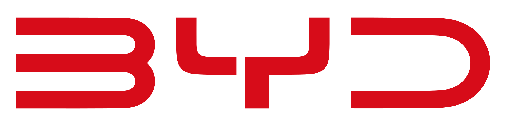

| MODEL | TENTANG |
 |
HARGA | HUBUNGI |
Didirikan pada November 1994, BYD adalah perusahaan teknologi tinggi yang berdedikasi untuk memanfaatkan inovasi teknologi demi kehidupan yang lebih baik. Setelah lebih dari 29 tahun pertumbuhan pesat, BYD telah memainkan peran penting dalam industri terkait elektronik, otomotif, energi terbarukan, dan transit kereta api. Dengan fokus pada akuisisi, penyimpanan, dan aplikasi energi, BYD menawarkan solusi energi baru tanpa emisi yang komprehensif. Sebagai perusahaan yang terdaftar di Bursa Efek Hong Kong dan Bursa Efek Shenzhen, pendapatan tahunan BYD pada tahun 2023 melebihi RMB 602 miliar atau setara dengan IDR 1.361 trilium.
BYD telah mengembangkan Blade Battery yang terkemuka di industri dan teknologi tenaga hibrida dual-mode, mempercepat transisi sekali dalam seabad dari kendaraan berbahan bakar fosil ke kendaraan listrik.